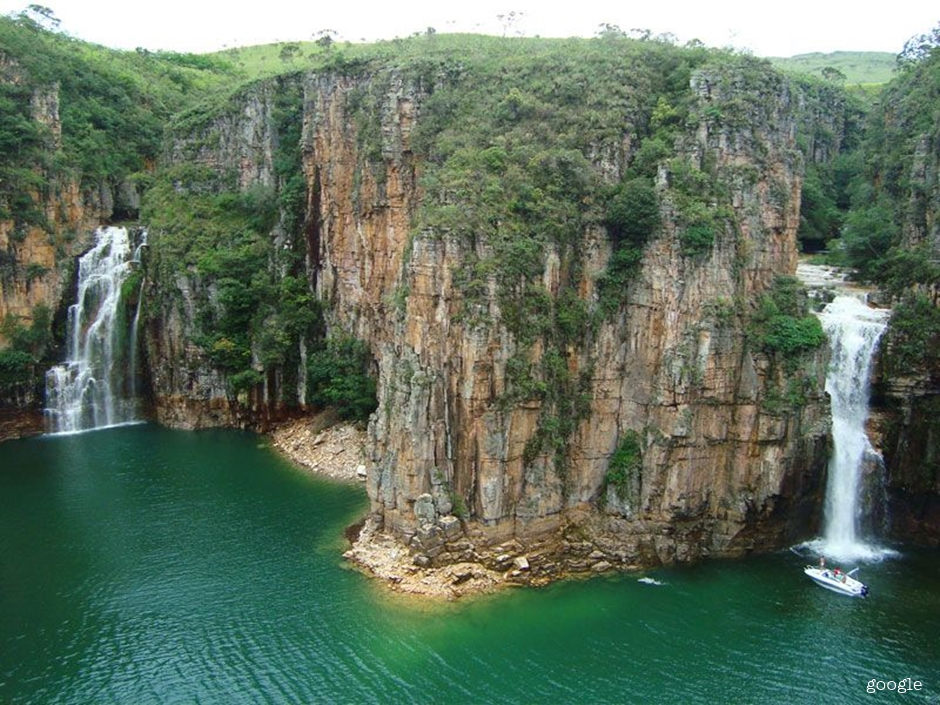

Capitólio

Capitólio se tornou um importante destino turístico de Minas Gerais, muito procurado nos últimos anos por conta de suas belas cachoeiras e rios de águas transparentes. O Cânion de Furnas é a principal atração, com suas paredes de pedra invadidas pelas águas esverdeadas do Lago de Furnas, formado pela represa da Usina Hidrelétrica de Furnas.
Clique aqui para voltar